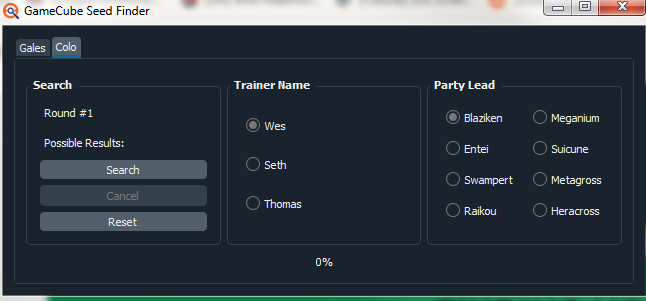
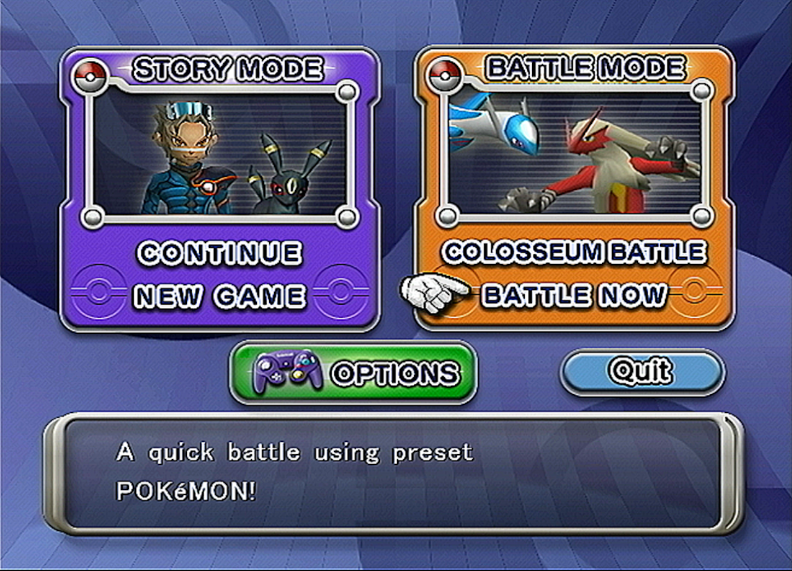
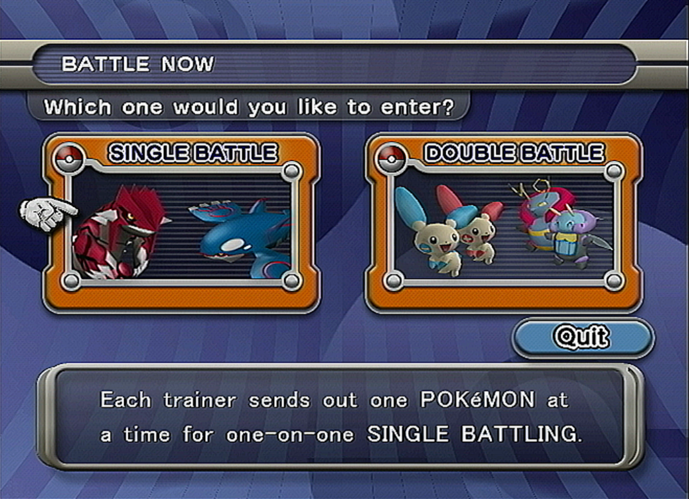
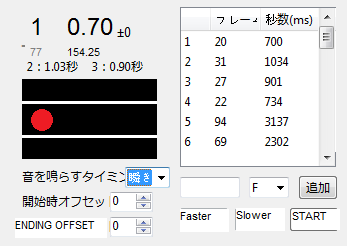
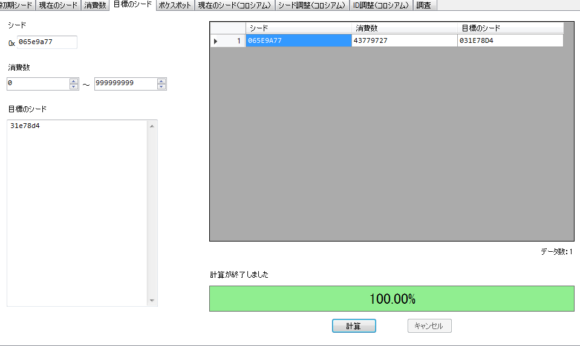

Colosseum Blink RNG
- Prerequisits
- Finding Initial Seed
- Calibration
- Doing the RNG
- Notes and Conclusions
Guide Navigation
Text Guide
Blink is an new RNG method for Colosseum developed by sina-poke. It is a way to use when a Pokemon Blinks its eyes in the status screen to determine your current seed. It is effective for Pokemon that are in quiet areas, but you must move through a noisey area to get to them because the save station is far away. In this guide I will use Suicune as an example. Suicune is in a room with absolutely no noise, but, the Under has a large amount of it, and it's not very controllable. This guide will show you how to combat it!
Prerequisits
Pokemon Colosseum: Any language will do
Espeon or Misdreavus: These are the two easiest Pokemon to use Blink with. Misdreavus is easier to see Blink, but you must purify it before you can use Blink with it, so Espeon must be used for some early RNGs.
Your TID/SID Combo if you want a shiny: If you don't want a shiny, this doesn't matter, but you need both if you want one. If you're starting a new game, try my Colosseum IDRNG guide.
Tools:
Finding Initial Seed
First, click the gen 3 tools tab in Pokefinder. Then, click gamecube seed finder. A new window will pop up, and you should click the colo tab. After this, boot Pokemon Colosseum. If you don't have the colo.precalc file, it will link you to a download page for it. All you must do is place the colo.precalc file into the same file as the Pokefinder.exe to get the seed searcher to work. After you do that, restart Pokefinder.
In Pokemon Colosseum, head to Battle now on the main menu, then select single battle, then select Ultimate difficulty. Then you'll be at a team preview of a randomly given team.
 

Main Menu Singles or Doubles Ultimate Difficulty Team preview
Once at the team preview, take note of the trainer name and lead Pokemon. In this case, it is Wes and Metagross. Click those two options in the seed finder, and hit search. Then, hit B to back out of this menu back to the battle now menu. Go back into ultimate difficult and do the same thing again. Repeat the entire process until a seed is given, and copy said seed to the clipboard. It should take 5-6 attempts to find your seed.
Calibration
After your find your initial seed, what you need to do is run from the save station as swiftly as you can to Suicune and proceed to catch it. This is to find out how many frames are consumed roughly by walking through the noisey area. Once you catch Suicune, paste your seed and the Suicunes stats into XDPokemon.
XDPokemon is in Japanese, so I have done my best to highlight every button you need pushed and translated it.
COTOOL
So step two of Calibration is using CoTool and Blinks, finally! We're going to reset our game and find our initial seed again, and then at this point, we're going to open CoTool. It is in Japanese, so I will do my best to explain everything. Below is a translated picture of the only tab we are going to need for standard blink.
You're going to paste your seed from PokeFinder into the current seed box, and if you're on JP or US game, leave the Jp/European box unchanged. If you're in Europe, change it to the second option, then put the Hz at 50 or 60 depending on your TV. If you're on an older version of CoTool, make sure to set the MS to 33.375 as well for US/JP games. You're also going to set the frame range to roughly 10,000 earlier and 10,000 greater than the frame that you hit the original Suicune on. Once that is set up, run to the room with your target Pokemon but DO NOT encounter them, instead open the party menu and wait. Hitting the "start blink" button means that everytime you press shift, CoTool will record a blink as having happened. So before we do this, make sure the sticky keys trigger is turned off if you're on windows.
Once you do that, you're going to hit start blink, and then open the summary of Espeon or Misdrevous. Every time you see them blink, hit shift. Do this up to 10-12 times, you probably won't need more than that. On what you decide is the final blink, make sure to close the status screen with the B Button on the gamecube controller at the same time as the final blink. After that, hit the search button on CoTool. The first column after the "frame" column, is how many frames you advanced before Blink. The middle is how many frames advanced because of blink, and the left is the sum of those two, and your total number of frame advances. The left-most column is your new "tentative" current seed.
Above is what your Blink timer tab should look like after you've completed the initial search. To the right is what Espeon looks like with its eyes closed as a reference shot.
After this, we are going to simply try and hit a specific frame using Blink Timer. First, check the "List Mode" box, and paste the seed we just found into the current seed box up top. Then, set the frame range from 0-4000. Then, hit searcher, and scroll all the way to the bottom in the largest window. It probably won't be at exactly 4000, but that's fine, we'll be treating whatever that number is there as our new target frame. In my case, it's 3998. Your window should look like this.
BLINK TIMER TRANSLATION
After this is done, click the now highlighted "Blink Timer" Option. I have translated all the relevant buttons. What you're going to do, is hit start on Blink timer at the same time as you click the summary page of Espeon. Blink timer will Beep every time Espeon Blinks. You will see a small count down before every beep as well, and the beep occurs when the red circle enters the empty circle. Sometimes there is no beep if two blinks are immediately after one another, but that's expected behavior. What you need to do is align these beeps with Espeons Blinks, because it will be slightly misaligned at first. You do this by clicking the faster and slower buttons, I suggest rapidly so. If Espeon Blinks, then a second later the beep happens, hit faster. If it beeps then Espeon Blinks, hit slower. You will have to do this a lot, a +- counter at the top next to the main timer will show how many +- you are. I usually end up at least +40. You want the timing to be the "Beep" happens just as Espeon starts to blink, that's the best I can explain it in text. On the final number, again, in my case, 77, you hit B to close Espeons menu in the GameCube to go back to the party menu.
Offset Calculation
Once you have finished the blink timer portion, encounter Suicunes trainer again, and capture it. Find what frame you hit. Remember your target frame. Mine was 3998. Figure out what frame you hit the same way we did last time. If you hit your target frame, congrats! You can move on to the final step of actually doing the RNG with no issue! If not, once that is done, in CoTool, check the "target frame" bubble, then the "offset calculator" check box. In the left box, put your target frame, and in the right box, put the frame you actually hit. Then hit the search button below. A new box will pop up. All you need to do is pay attention to the number in the [ ] brackets. That is our offset. It goes in the "Ending Offset" box in Blink Timer every single time we do a Blink RNG. In my case, I got a 9. Now we have all the information to do our actual RNG!
Finding a Target
Only use this section if you're aiming for a specific seed, in my case, it's a 31/x/30/31/31/31 Modest Suicune that is also shiny!
So once again, we find our initial seed using the method outlined above in Pokefinder, and Copy the seed to clipboard, and paste it in the seed distance tab in XDSEED to see how many frames away you are from it. The top box is where you paste the Seed you got from Pokefinder, the two boxes below are the frame range. Left should be set to 0, right should be set to the maximum you're willing to wait. The large bottom box is for pasting your target seed / seeds. If you have multiple, it is okay to paste them there. If the seed is not too far away from what you are aiming for, great! Otherwise, reset until you find a seed you like.
Only use this section for finding a quick shiny frame, skip it if you have a specific target in mind and head to the next section.
So, what we do here is select the correct profile in PokeFinder, then paste our Initial seed into the generator Box. Also, check the delay box, and set the delay to 5. Set the frame range to about 100,000 and check shiny only! We'll be looking for a frame around 25,000-30,000 for Suicune specifically, since we will do around 20,000 from just walking to Venus' room, and another few thousand from Blinking.
Doing the RNG
At this point, executing the RNG is fairly simple because you already should understand the basics of how Blink works, but there are a few more smaller details to go over. I will outline the final process in some bullet points.
- Run to the quiet area room, and find your current seed as we have done before using Blink.
- After you find your current seed this way, figure out how many frames you are away from your target. If you are still a lot of frames away, I do advancements using Shadow Yanma, it consumes around 17,000 frames per second. Do this and repeat step 1 until you are close to your target seed, around a few thousand frames away.
- Once you are only a few thousand frames away or less, and you have your new temporary current seed, we begin!
- In this picture, I have found my current seed and put it into Pokefinder with a delay of 5, and know I am 3991 frames away from my target! So, to get to this exact frame, I will use CoTool now.
- In this image, in CoTool I have pasted my current seed, and checked the target frame box, but NOT checked the offset calculator button. Then, I hit search. The output it is giving me is a frame hit, and a remainder. Blinks will not always be able to get you EXACTLY to your target frame, so, this output tells you what frames you can hit that have a remainder divisible by 7. This is important, because 7 is the only amount we can advance in the Overworld consistently and slowly. You advance 7 by going into the snag list. So what this says is to use Blink Timer to hit frame 3739 from my current seed, then advance 252 using snag list, which is going in and out of shadowlist 36 times!
- At this point, I set the frame range in CoTool to 0-3739, because I am starting on frame 0 and want to hit frame 3739, then click list mode. Afterwards, I open blink timer and set the ending offset to 9 as I previously calculated during the calibration section of my guide. Then, just like last time, we hit Faster or slower until our Blink timer lines up with Espeons Blinks. Again, I try to have it beep right as the blink is starting, rather than in the middle of it. If the eyes are closed when it beeps, that's too late. You want it to beep while they are open.
- When the final beep happens, you're going to hit B as it Beeps to close the menu. I personally have had the best results of Espeon is blinking DURING the fadeout to the party menu. In this picture, you can see the Espeon is blinking while the screen is darkened a bit from the fadeout. This is ideal! Once that is done, you should be only have to do your remaining advances, which for me is 252. You divide this by 7, which comes out to 36 for me. That means I must go in and out of the snag list 36 times, then do the battle.
- This is me doing the snag list advances. You click snag list, then the list of Shadow Pokemon shows up, you hit B, then hit snag list again. I do this 36 times.
- After the snag list advances are done, head into battle and capture your Pokemon! If you did everything right, you should have the stats / nature / and shinyness you desired! If not, I suggest trying the calibration step a few more times.
Notes and Conclusions
Blink RNG may seem complicated at first, but honestly it's very simple and difficult to mess up on execution wise. It is useful for many Pokemon, including Sudowoodo, Hitmontop, Dunsparce, Suicune, Entei, the entire Snagem Hideout, and much more! Good luck!
Thank you for reading, I hope you succeed in getting your Pokemon. If you have any questions feel free to ask me on Twitter @im_a_blisy or join my discord. https://discord.gg/QchhXQv If you speak another language other than English fluently, and would like to translate this guide, please, contact me and I'd love to help :D